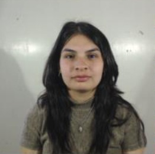

El proyecto surge ante la necesidad de desarrollar soluciones tecnológicas que permitan mejorar las estrategias actuales de conservación de especies animales en peligro de extinción, frente a las limitaciones de los métodos reproductivos tradicionales.
Las técnicas disponibles — reproducción asistida o gestación en vientres sustitutos — presentan restricciones significativas biológicas, logísticas y éticas, especialmente en especies con baja tasa reproductiva o en riesgo crítico. No existen sistemas capaces de replicar integralmente las condiciones fisiológicas del entorno uterino.
Especie de referencia: Rinoceronte blanco del norte (Ceratotherium simum cottoni), dada la criticidad de sus condiciones reproductivas actuales. La validación inicial se realizará en lagomorfos (Oryctolagus cuniculus) por su ciclo de gestación rápido (~31 días), documentación bibliográfica disponible, viabilidad ética y costo-eficiencia.
BioNest — Sistema de Ectogénesis Artificial
Sistema de Incubación Gestacional Extrauterina para Conservación de Especies · NestBiotech · Inicio: 3 Agosto 2026 · Fin: 28 Mayo 2027
Duración Total
10
meses (3 ago 2026 – 28 may 2027)
Esfuerzo Total
1616
horas/persona estimadas (PERT)
Tareas en WBS
44
distribuidas en 4 fases
Stage Gates
S1–S6
+ Gate de habilitación Fase 1
Descripción del Caso
CONTEXTO Y MOTIVACIÓN
Propuesta de Valor
DIFERENCIADORES CLAVE
Solución tecnológica modular y escalable que simula de manera controlada el entorno intrauterino.
Prototipo funcional de incubadora gestacional extrauterina de entorno líquido con control automatizado de variables fisiológicas y arquitectura adaptable, que replica fielmente las condiciones fisiológicas maternas permitiendo desarrollo embrionario más estable y menos invasivo.
Escalabilidad por diseño: el sistema calibrado en lagomorfos es adaptable a especies de mayor tamaño mediante ajuste paramétrico (volumen del receptáculo, flujos de perfusión, rangos termometabólicos) sin requerir rediseño estructural.
Modelo de negocio: licenciamiento tecnológico y provisión de insumos específicos a organizaciones de conservación.
Prototipo funcional de incubadora gestacional extrauterina de entorno líquido con control automatizado de variables fisiológicas y arquitectura adaptable, que replica fielmente las condiciones fisiológicas maternas permitiendo desarrollo embrionario más estable y menos invasivo.
Escalabilidad por diseño: el sistema calibrado en lagomorfos es adaptable a especies de mayor tamaño mediante ajuste paramétrico (volumen del receptáculo, flujos de perfusión, rangos termometabólicos) sin requerir rediseño estructural.
Modelo de negocio: licenciamiento tecnológico y provisión de insumos específicos a organizaciones de conservación.
Objetivo General
OBJETIVO CENTRAL DEL PROYECTO
Desarrollar un prototipo funcional modular de sistema de incubación gestacional extrauterina, validado inicialmente con parámetros fisiológicos de lagomorfos, que permita mediante ajuste paramétrico su adaptación futura a distintas especies mamíferas, incluyendo aquellas en peligro de extinción.
Objetivos Específicos
10 OBJETIVOS TÉCNICOS
| # | Objetivo Específico |
|---|---|
| OE-01 | Diseñar una arquitectura modular del sistema que permita escalabilidad paramétrica (volumen del rectáculo, flujos de perfusión, rangos de temperatura) sin requerir rediseño estructural. |
| OE-02 | Diseñar y bioimprimir un receptáculo uterino a escala utilizando biomateriales o hidrogeles capaces de soportar fluidos a presión. |
| OE-03 | Diseñar e implementar un circuito cerrado de circulación de fluidos impulsado por una bomba automatizada (simulación de corazón artificial). |
| OE-04 | Integrar un módulo de filtrado/diálisis para la remoción de desechos simulados del circuito. |
| OE-05 | Desarrollar y acoplar un mecanismo de hematosis artificial capaz de oxigenar y descarboxilar el fluido circulante. |
| OE-06 | Implementar un sistema de inyección controlada que permita regular el ingreso de fluidos simulados (nutrientes y hormonas) por vía venosa. |
| OE-07 | Incorporar una matriz de sensores integrados para el monitoreo continuo de variables críticas (presión, temperatura, pH y volumen) dentro del receptáculo. |
| OE-08 | Desarrollar un módulo de estimulación física (presión mecánica) y acústica en el habitáculo. |
| OE-09 | Construir una interfaz de usuario (Dashboard) básica para la visualización en tiempo real de las variables monitoreadas y el registro de datos experimentales. |
| OE-10 | Elaborar y presentar la documentación necesaria para la evaluación del proyecto por un comité de ética institucional, contemplando los aspectos bioéticos asociados al desarrollo futuro del sistema. |
Entregables Principales
5 ENTREGABLES FORMALES DEL PROYECTO
| # | Entregable | Descripción | Responsable | Criterio de Aceptación |
|---|---|---|---|---|
| E-01 | Prototipo físico ensamblado | Receptáculo uterino bioimpreso integrado al circuito de soporte vital (bombeo, oxigenación, diálisis). | Bioingeniero / Esp. Materiales / Diseño Industrial | Superación Stage-Gates S1–S4: estanqueidad, circulación 24h, transferencia gaseosa verificada. |
| E-02 | Sistema electrónico (Dashboard) | Sistema de sensores con interfaz de usuario para visualización y registro de datos en tiempo real. | Bioingeniero (electrónica) / Desarrollador software | Stage-Gate S5: lectura estable de variables críticas y almacenamiento de datos sin errores. |
| E-03 | Documentación técnica | Diagramas, planos CAD, fichas técnicas de biomateriales, registro de decisiones y manual de usuario. | Director Proyecto / Biotecnólogo / Bioingeniero | Documentación aprobada que refleja el estado final "as-built" del prototipo. |
| E-04 | Protocolo de pruebas | Procedimientos de ensayo hidráulico y térmico ejecutados con resultados y conclusiones. | Biotecnólogo / Técnico / Bioingeniero | Protocolo firmado con resultados dentro de los rangos definidos para la prueba de concepto. |
| E-05 | Expediente bioético | Documentación formal sobre implicancias bioéticas, restricciones y marco normativo. | Director del Proyecto / Biotecnólogo | Expediente presentado y aprobación institucional obtenida para el Stage-Gate 1. |
Alcance del Proyecto
Definición de lo que está y lo que NO está incluido en el alcance.
Exclusiones del Alcance
ELEMENTOS EXPLÍCITAMENTE FUERA DEL PROYECTO
Obtención de material biológico: la generación, adquisición o manipulación de cigotos, gametos, embriones o cualquier tejido biológico queda completamente fuera del alcance.
Modificación o edición genética: el proyecto no contempla ninguna actividad vinculada a manipulación genética, edición genómica (CRISPR u otras tecnologías) ni mejoramiento de especies.
Desarrollo de fórmulas biológicas (nutrientes u hormonas): el sistema de inyección será validado únicamente a nivel mecánico y volumétrico.
Producción en escala o fabricación en serie: el proyecto se limita al desarrollo de un único prototipo funcional como prueba de concepto.
Gestación humana: el sistema excluye de forma explícita e irrevocable su uso para la gestación humana desde etapa embrionaria o in vitro, por razones bioéticas, morales y regulatorias.
Integración con infraestructuras veterinarias externas: no se prevé la conexión ni compatibilización del sistema con equipamiento, bases de datos ni protocolos operativos de instituciones veterinarias o zoológicas externas.
Protocolos de bioseguridad de nivel industrial: las pruebas se realizarán bajo condiciones estándar de laboratorio.
Validación multi-especie en fase inicial: el presente proyecto validará el sistema únicamente con parámetros de lagomorfos.
Stakeholders
Identificación y análisis de todas las partes interesadas del proyecto.
Mapa de Stakeholders
USUARIOS, INTERESADOS Y ORGANISMOS REGULADORES
| Nombre / Org. | Rol | Interés en el Proyecto | Influencia | Categoría |
|---|---|---|---|---|
| Institución de Conservación | Cliente / Usuario Final | Éxito en la reproducción de especies en peligro crítico. | Alta | Externo |
| NestBiotech (Empresa Biotech) | Sponsor | Retorno de inversión / Posicionamiento. Obtener un sistema licenciable y validado para el mercado. | Alta | Interno |
| Comité de Bioética | Regulador | Cumplimiento de normativas éticas aplicables. | Media | Externo |
| Organismos Regulatorios (CICUAL, IRAM/IEC) | Regulador | Establecer el marco normativo veterinario y de seguridad eléctrica. | Media | Externo |
| Proveedores | Socio Externo | Suministro de insumos críticos (biomateriales, componentes electrónicos). | Media | Externo |
Áreas Involucradas
ESTRUCTURA ORGANIZACIONAL DEL PROYECTO
I+D — Investigación y Desarrollo
Responsable del diseño conceptual del sistema, selección de biomateriales, definición de parámetros fisiológicos objetivo y revisión bibliográfica de antecedentes técnicos (Biobag, EVE, Weizmann). Es el área central del proyecto.
Responsable del diseño conceptual del sistema, selección de biomateriales, definición de parámetros fisiológicos objetivo y revisión bibliográfica de antecedentes técnicos (Biobag, EVE, Weizmann). Es el área central del proyecto.
Ingeniería
A cargo del diseño CAD de los subsistemas, la bioimpresión del rectáculo uterino, la construcción del circuito de soporte vital (bombeo, oxigenación, diálisis) y la integración electrónica del sistema de sensores con el Dashboard.
A cargo del diseño CAD de los subsistemas, la bioimpresión del rectáculo uterino, la construcción del circuito de soporte vital (bombeo, oxigenación, diálisis) y la integración electrónica del sistema de sensores con el Dashboard.
Validación Experimental
Responsable de la ejecución de los ensayos de laboratorio definidos en el protocolo de pruebas: pruebas hidráulicas, térmicas y de estanqueidad.
Responsable de la ejecución de los ensayos de laboratorio definidos en el protocolo de pruebas: pruebas hidráulicas, térmicas y de estanqueidad.
Documentación Técnica y Bioética / Comité de Ética
Elabora y mantiene actualizada toda la documentación del proyecto. Garantiza la trazabilidad del proceso conforme a PMBOK.
Elabora y mantiene actualizada toda la documentación del proyecto. Garantiza la trazabilidad del proceso conforme a PMBOK.
Marketing y Comunicación
Responsable de la elaboración de materiales institucionales para la presentación del sistema ante la organización de conservación cliente.
Responsable de la elaboración de materiales institucionales para la presentación del sistema ante la organización de conservación cliente.
Equipo del Proyecto
12 integrantes con roles y responsabilidades definidas.
Bugs Bunny
Director del Proyecto (PM)
Planificación, coordinación y control integral del proyecto. Gestión del ciclo de vida híbrido, conducción de Stage-Gates y reuniones de seguimiento, administración del cronograma, presupuesto, riesgos y comunicaciones.
Judy Hopps
Jefe de Ingeniería
Dirección técnica global del proyecto. Coordina las actividades de los distintos subsistemas de ingeniería, validación de diseños y decisiones técnicas, aprobación de entregables de ingeniería y asegura la coherencia de la arquitectura funcional del sistema.

Belen Hornus
Bioingeniera 1 (Diseño)
Diseño funcional de los subsistemas y de la integración de sensores dentro de la arquitectura general del sistema. Participación en el diseño de los módulos de soporte vital.
Mateo Anderson
Bioingeniero 2 (Electrónica)
Responsable del diseño e implementación del sistema electrónico de monitoreo y control. Integra la matriz de sensores de presión, temperatura, pH y volumen.
Sr. Conejo
Especialista en Materiales
Selección, caracterización y validación de biomateriales e hidrogeles utilizados en el receptáculo bioimpreso.
Roger Rabbit
Biotecnólogo
Definición y validación de parámetros fisiológicos de referencia para lagomorfos. Supervisión técnica de los módulos de oxigenación, hematosis, diálisis e infusión.
Snowball
Técnico de Laboratorio
Ejecución de ensayos hidráulicos, térmicos, de estanqueidad y de circulación continua. Operación del prototipo durante las pruebas experimentales.
Lola Bunny
Desarrolladora de Software
Desarrollo del Dashboard de monitoreo y control en tiempo real. Diseño e implementación del sistema de almacenamiento.
Fatu
Lic. en Diseño Industrial
Diseño funcional, ergonómico y constructivo del receptáculo y del habitáculo del sistema. Modelado CAD.
Peter Rabbit
Lic. en Marketing
Elaboración de materiales de comunicación institucional y documentación comercial del proyecto.
Sheila Riffel
Gestora de Calidad
Diseño, implementación y supervisión del Sistema de Gestión de Calidad del proyecto.
Najin
Contador
Planificación, control y seguimiento financiero del proyecto. Gestión de presupuestos y monitoreo de costos.
Sudan
Sponsor (NestBiotech)
Patrocinio y financiamiento del proyecto. Participación en los Stage-Gates críticos.
Nymeria Stark
Organismo Regulador / Comité de Bioética
Evaluación del cumplimiento de requisitos éticos, regulatorios y de seguridad aplicables al proyecto.
Ciclo de Vida del Proyecto
Enfoque híbrido: fases predictivas (1 y 4) + fases adaptativas Kanban (2 y 3), articuladas por Stage-Gates.
Enfoque Híbrido: Los Stage-Gates gobiernan el qué y cuándo avanzar. Kanban gobierna el cómo ejecutar. Esta distinción de capas es intencional y estructural.
Fase 1 — Planificación y Definición
PREDICTIVA 3 ago 2026 → 1 dic 2026
Enfoque predictivo orientado a establecer las bases organizacionales, regulatorias y técnicas necesarias para la ejecución posterior.
1.1 Gestión del Proyecto
Marcos de gobernanza y control del proyecto. 7 tareas, 25 días hábiles.
Marcos de gobernanza y control del proyecto. 7 tareas, 25 días hábiles.
1.2 Expediente Bioético
Cumplimiento de requisitos regulatorios y éticos aplicables. Incluye espera CICUAL (30 días hábiles).
Cumplimiento de requisitos regulatorios y éticos aplicables. Incluye espera CICUAL (30 días hábiles).
1.3 Definición Técnica
Ingeniería conceptual: arquitectura funcional, parámetros fisiológicos, matriz de escalabilidad.
Ingeniería conceptual: arquitectura funcional, parámetros fisiológicos, matriz de escalabilidad.
Fase 2 — Desarrollo de Subsistemas
KANBAN ADAPTATIVA 2 dic 2026 → 19 feb 2027
Elevada incertidumbre técnica: los resultados experimentales pueden requerir modificaciones sucesivas en el diseño.
No se utiliza Gantt detallado con fechas absolutas. En su lugar: Roadmap de fases con Stage-Gates + Tablero Kanban + Mapa de dependencias estructurales + Métricas de flujo.
No se utiliza Gantt detallado con fechas absolutas. En su lugar: Roadmap de fases con Stage-Gates + Tablero Kanban + Mapa de dependencias estructurales + Métricas de flujo.
2.1 Receptáculo Uterino
WIP=2 · 15 días hábiles · 2 dic → 23 dic 2026
WIP=2 · 15 días hábiles · 2 dic → 23 dic 2026
2.2 Circuitos de Soporte Vital
WIP=2 · 21 días hábiles · 24 dic → 25 ene 2027
WIP=2 · 21 días hábiles · 24 dic → 25 ene 2027
2.3 Electrónica y Control
WIP=2 · 17 días hábiles · 26 ene → 19 feb 2027
WIP=2 · 17 días hábiles · 26 ene → 19 feb 2027
Fase 3 — Integración y Validación Final
KANBAN (WIP restrictivo) 8 mar 2027 → 5 may 2027
WIP=1 en ambas subfases (3.1 y 3.2), priorizando la estabilidad del sistema.
Nota: 2 semanas de vacaciones del 22 feb al 5 mar 2027 entre fases 2 y 3.
Nota: 2 semanas de vacaciones del 22 feb al 5 mar 2027 entre fases 2 y 3.
3.1 Integración Mecánica y Electrónica
WIP=1 en serie · 20 días hábiles · 8 mar → 6 abr 2027
WIP=1 en serie · 20 días hábiles · 8 mar → 6 abr 2027
3.2 Protocolo de Pruebas de Sistema
WIP=1 en serie · 20 días hábiles · 7 abr → 5 may 2027
WIP=1 en serie · 20 días hábiles · 7 abr → 5 may 2027
Fase 4 — Cierre y Transferencia
PREDICTIVA 6 may 2027 → 28 may 2027
Una vez validado el prototipo se adopta nuevamente un enfoque predictivo para consolidar y transferir los resultados obtenidos.
4.1 Documentación Técnica "As-Built"
12 días hábiles · 6 may → 21 may 2027
12 días hábiles · 6 may → 21 may 2027
4.2 Marketing y Licenciamiento
4 días hábiles · 24 may → 28 may 2027
4 días hábiles · 24 may → 28 may 2027
Justificación de Kanban sobre otros marcos ágiles
POR QUÉ KANBAN Y NO SCRUM
Flujo continuo compatible con laboratorio
A diferencia de Scrum, Kanban no impone sprints temporales fijos. Esto resulta especialmente adecuado para un proyecto experimental donde actividades como la bioimpresión, el curado de materiales o las pruebas hidráulicas poseen duraciones variables e inciertas.
Visualización del trabajo
El tablero Kanban permite visualizar el estado de cada subsistema en tiempo real, facilitando la identificación temprana de bloqueos y cuellos de botella.
Control del WIP (Work In Progress)
La limitación explícita del WIP evita la sobrecarga del equipo y promueve la finalización de tareas antes de iniciar nuevas actividades.
Adaptabilidad frente a resultados experimentales
Si una prueba no cumple los criterios de aceptación, la tarea puede regresar a etapas previas del flujo sin necesidad de replantear la planificación completa del proyecto.
WBS — Work Breakdown Structure
44 tareas distribuidas en 4 fases. Haz clic en cada fase para expandir o contraer.
FASE 1
Planificación y Definición (Predictiva)
17 tareas
▼
IDTareaEntregableCriterio de Completitud
1.1 — Gestión del Proyecto
1.1.1
Redactar Acta de Constitución
Acta de Constitución
Firma del sponsor y aprobación formal.
1.1.2
Elaborar Plan de Gestión del Proyecto (alcance, cronograma)
Plan de Gestión
Plan aprobado por el equipo directivo.
1.1.3
Identificar y registrar stakeholders y estrategia
Registro de Stakeholders
Matriz de stakeholders completa.
1.1.4
Elaborar registro de riesgos inicial
Registro de Riesgos
Matriz de riesgos priorizada.
1.1.5
Diagramar presupuesto
Presupuesto Inicial
Presupuesto validado por finanzas.
1.1.6
Gestionar contratos con proveedores para biomateriales, componentes electrónicos e insumos tercerizados
Contratos y Convenios
Contratos firmados y órdenes generadas.
1.1.7
Realizar reunión de Kick Off
Acta de Kick Off
Acta de reunión distribuida.
1.2 — Expediente Bioético y Normativo
1.2.1
Elaborar documentación para el Comité de Ética Institucional
Expediente Ético
Expediente completo para presentación.
1.2.2
Analizar implicancias y restricciones de uso
Informe de Restricciones
Informe firmado por especialistas.
1.2.3
Ejecutar etapa de revisión de documentación institucional
Informe de Revisión
Visto bueno del departamento legal.
1.2.4
Enviar documentación al organismo de ética
Comprobante de envío
Sello de recepción del organismo.
1.2.5
Obtención de aprobación de seguridad eléctrica (IRAM/IEC)
Certificado IRAM/IEC
Certificado IRAM/IEC recibido.
1.2.6
⬡ HITO: Obtención de aprobación ética de CICUAL (Hito de avance)
Aprobación CICUAL
Documento oficial de CICUAL recibido. ~30-45 días trámite.
1.3 — Definición Técnica de Subsistemas
1.3.1
Definir parámetros fisiológicos de referencia (Lagomorfos — O. cuniculus)
Documento de Parámetros
Tabla de parámetros validada.
1.3.2
Elaborar matriz de escalabilidad
Matriz de Escalabilidad
Matriz con 3 categorías (S/M/L).
1.3.3
Diseñar arquitectura funcional del sistema
Diseño Funcional
Diagrama de arquitectura aprobado.
1.3.4
Elaborar diagramas de flujo del sistema (P&ID)
Diagramas del Sistema
Diagramas validados por ingeniería.
FASE 2
Desarrollo de Subsistemas (Kanban)
13 tareas
▼
IDTareaEntregableCriterio de Completitud
2.1 — Receptáculo Uterino
2.1.1
Compra a proveedores de materiales tercerizados (hidrogeles, polímeros, reactivos)
Materiales Adquiridos
Materiales recibidos en laboratorio.
2.1.2
Diseñar modelo CAD del habitáculo uterino (escala lagomorfa, 200-400ml)
Modelo CAD
Modelo CAD revisado y aprobado por par.
2.1.3
Bioimprimir receptáculo con hidrogeles/biomateriales (fabricación aditiva)
Prototipo Bioimpreso
Pieza física terminada, registro fotográfico e ID de lote.
2.1.4
Ejecutar pruebas de estanqueidad y resistencia a presión nominal
Informe de Ensayos
Aprobación Stage-Gate S1: sin fugas ni deformación estructural.
2.2 — Circuitos de Soporte Vital
2.2.1
Diseñar y ensamblar módulo de bombeo — Corazón artificial
Módulo de Bombeo
Prototipo de bombeo funcional (SG-S2: circulación 24hs sin pérdidas >5%).
2.2.2
Desarrollar sistema de hematosis artificial (oxigenación y descarboxilación, oxigenador de membrana)
Sistema de Hematosis
Prototipo de hematosis funcional (SG-S3: transferencia gaseosa en rangos fisiológicos).
2.2.3
Diseñar módulo de filtrado y diálisis
Sistema de Filtrado
Prototipo funcional (SG-S4: remoción por encima del umbral definido).
2.2.4
Diseñar sistema de inyección controlada
Sistema de Inyección
Prototipo de inyección funcional, flujo regulable validado.
2.3 — Electrónica y Control
2.3.1
Integrar matriz de sensores (presión, temperatura, pH, volumen)
Matriz de Sensores
Sensores integrados, cableados y con lectura verificada.
2.3.2
Desarrollar interfaz de usuario (Dashboard) — UI tiempo real, alarmas, gráficos históricos
Dashboard Funcional
Interfaz funcional con visualización de 4 variables críticas.
2.3.3
Desarrollar módulo de estimulación (presión mecánica + emisión acústica)
Módulo de Estimulación
Módulo probado mecánica y acústicamente.
2.3.4
Implementar sistema de almacenamiento y registro de datos experimentales
Base de Datos Experimental
Sistema de almacenamiento operativo, sin pérdidas en 24hs (SG-S5).
FASE 3
Integración y Validación Final
8 tareas
▼
IDTareaEntregableCriterio de Completitud
3.1 — Integración Mecánica y Electrónica
3.1.1
Ensamblar prototipo físico completo
Prototipo Integrado
Sistema ensamblado al 100%.
3.1.2
Acoplar sensores al Dashboard
Enlace Software/HW
Lectura de 4 variables en pantalla coherente.
3.1.3
Calibrar parámetros fisiológicos del sistema (ajuste fino a rangos lagomorfos, error <5%)
Sistema Calibrado
Error de medición < 5%. Gate S6 aprobado.
3.2 — Protocolo de Pruebas de Sistema
3.2.1
Ejecutar ensayos hidráulicos integrados
Informe Hidráulico
Operación sin fugas ni cavitación.
3.2.2
Ejecutar ensayos térmicos integrados
Informe Térmico
Estabilidad lograda (±0.5°C).
3.2.3
Ejecutar simulación de circulación continua — Prueba de 24hs
Informe de Simulación
24hs sin paradas críticas.
3.2.4
Redactar informe final de resultados y conclusiones
Informe Final
Informe final aprobado.
3.2.5
Gestionar validación externa para control de calidad
Certificación de Calidad
Certificación de calidad recibida.
FASE 4
Cierre y Transferencia
6 tareas
▼
IDTareaEntregableCriterio de Completitud
4.1 — Documentación Técnica "As-Built"
4.1.1
Actualizar planos finales
Planos Finales
Planos finales entregados y versionados.
4.1.2
Elaborar fichas técnicas
Fichas Técnicas
Fichas técnicas completas y archivadas.
4.1.3
Consolidar log de decisiones
Log de Decisiones
Log cerrado y trazable.
4.1.4
Elaborar manual de usuario
Manual de Operación
Manual entregado y validado.
4.2 — Marketing y Licenciamiento
4.2.1
Realizar reunión de cierre
Acta de Cierre
Acta de cierre firmada.
4.2.2
Realizar presentación final a la Institución de Conservación
Presentación Final
Recepción conforme del cliente.
Roadmap del Proyecto
Inicio: 3 Agosto 2026 · Fin: 28 Mayo 2027 · 202 días hábiles. El Gantt con fechas absolutas por tarea se reemplaza por este Roadmap para las fases adaptativas.
Presióná ESC para salir
Feriados Descontados por Subfase
CALENDARIO ARGENTINO 2026–2027
| Feriado | Fecha | Afecta a |
|---|---|---|
| Paso a la Inmortalidad del Gral. José de San Martín | 17/08/2026 | Subfase 1.1 |
| Día del Respeto a la Diversidad Cultural | 12/10/2026 | Subfase 1.2 |
| Día de la Soberanía Nacional | 20/11/2026 | Subfase 1.3 |
| Día de la Inmaculada Concepción de María | 08/12/2026 | Subfase 2.1 |
| Navidad | 25/12/2026 | Subfase 2.2 |
| Año Nuevo | 01/01/2027 | Subfase 2.2 |
| Carnaval | 15/02/2027 y 16/02/2027 | Subfase 2.3 |
| Día Nacional de la Memoria por la Verdad y la Justicia | 24/03/2027 | Subfase 3.1 |
| Día del Veterano y de los Caídos en la Guerra de Malvinas | 02/04/2027 | Subfase 3.1 |
| Puente (Por el 1° de Mayo) | 30/04/2027 | Subfase 3.2 |
| Día de la Revolución de Mayo | 25/05/2027 | Subfase 4.2 |
Estimaciones PERT — Delphi
3 expertos (3 bioingenieros). TE = (O + 4·M + P) / 6 · σ = (P − O) / 6 · Varianza = σ²
Interpretación PERT: Intervalo de confianza 68%: TE ± σ · 95%: TE ± 2σ · 99.7%: TE ± 3σ
Total proyecto: TE = 1616 hs · σ total = √3207,5 ≈ 56,6 hs · Varianza total = 3207,5
Total proyecto: TE = 1616 hs · σ total = √3207,5 ≈ 56,6 hs · Varianza total = 3207,5
| ID | Tarea | O avg | M avg | P avg | TE (hs/p) | σ | Varianza | Riesgo / Comentario |
|---|
Tablero Kanban & WIP Limits
Gestión del flujo de trabajo en las fases adaptativas del proyecto. Los límites WIP son reglas de operación, no sugerencias.
WIP Limits por Columna/Subfase
JUSTIFICACIÓN DE CADA LÍMITE
| Subfase | WIP Límite | Justificación |
|---|---|---|
| 2.1 Receptáculo Uterino | 2 | El receptáculo tiene tareas con perfiles distintos (compra/CAD vs. bioimpresión/pruebas), lo que permite que dos recursos trabajen en paralelo sin bloquearse. |
| 2.2 Circuitos de Soporte Vital | 2 | Los módulos de soporte vital son desarrollados por perfiles diferentes, por lo que dos tareas pueden coexistir sin saturar al equipo. |
| 2.3 Electrónica y Control | 2 | La electrónica y el software tienen dependencias cruzadas, pero el desarrollo de hardware y software puede correr en paralelo. |
| 3.1 Integración Mecánica y Electrónica | 1 | La integración mecánica y electrónica requiere que cada tarea esté completamente finalizada antes de avanzar a la siguiente. |
| 3.2 Protocolo de Pruebas | 1 | Las pruebas de sistema son estrictamente secuenciales por diseño; el responsable de dichas tareas es la misma persona. |
Políticas Explícitas — DoR y DoD
DEFINITION OF READY / DEFINITION OF DONE POR SUBFASE
2.1 Receptáculo Uterino
▼
DoR
- Biomateriales e hidrogeles disponibles en laboratorio.
- Parámetros fisiológicos de lagomorfos definidos.
- Modelo CAD revisado y aprobado por par.
DoD
- Receptáculo bioimpreso con registro fotográfico e ID de lote.
- Pruebas de estanqueidad superadas a presión nominal.
- Gate S1 aprobado y firmado.
2.2 Circuitos de Soporte Vital
▼
DoR
- Especificaciones de flujos de perfusión y rangos fisiológicos definidos.
- Componentes electrónicos y mecánicos disponibles en laboratorio.
- Gate S1 superado.
DoD
- Circulación continua durante 24hs sin pérdidas superiores al 5% (Gate S2).
- Transferencia gaseosa verificada dentro de rangos fisiológicos (Gate S3).
- Remoción de residuos simulados por encima del umbral definido (Gate S4).
2.3 Electrónica y Control
▼
DoR
- Protocolo de variables a monitorear definido.
- Sensores físicamente disponibles.
- Arquitectura del dashboard especificada.
DoD
- Lectura simultánea estable de las 4 variables críticas.
- Registro persistente de datos sin errores.
- Gate S5 aprobado y firmado.
3.1 Integración Mecánica y Electrónica
▼
DoR
- Gates S1 a S5 superados.
- Todos los subsistemas físicamente disponibles para ensamblaje.
- Protocolo de calibración escrito y firmado.
DoD
- Prototipo ensamblado al 100%.
- Lectura de sensores coherente en el dashboard.
- Error de medición menor al 5%.
- Gate S6 aprobado.
3.2 Protocolo de Pruebas de Sistema
▼
DoR
- Gate S6 superado.
- Protocolos de ensayo firmados y equipos calibrados.
DoD
- Ensayos hidráulicos y térmicos dentro de rangos aceptables.
- Simulación de 24hs completada sin paradas críticas.
- Informe final redactado y aprobado.
Cadencias Kanban
REUNIONES REGULARES CON PROPÓSITO ESPECÍFICO
| Cadencia | Frecuencia | Propósito Principal | Participantes |
|---|---|---|---|
| Daily Stand-up | Diaria (15') | Recorrer el tablero de derecha a izquierda. ¿Hay bloqueos o WIPs rotos? | Equipo técnico completo |
| Replenishment | Semanal (30') | Priorizar el backlog. Decidir qué entra al flujo según capacidad. | Director + Dueños de subsistema |
| Stage-Gate Review | Bajo demanda | Validar que un subsistema supera su Gate específico (S1–S6). | Director + Owner + Sponsor |
| Operations Review | Quincenal (45') | Revisar métricas (Cycle Time, CFD) y ajustar WIP limits. | Director + Equipo |
| Retrospectiva | Mensual (60') | Mejora del sistema: ¿Las políticas funcionan? ¿Hay que cambiar columnas? | Equipo completo |
Tablero Kanban — Interactivo
Arrastro las cards entre columnas. Los límites WIP se muestran en rojo cuando se superan.
F2.1 Receptáculo
F2.2 Soporte Vital
F2.3 Electrónica
F3 Integración
Gate
Stage-Gates
Los gates no interrumpen el flujo Kanban global; funcionan como criterios de Definition of Done formalizados para tareas críticas.
S1
Gate S1 — Receptáculo Bioimpreso
Supera prueba de estanqueidad a presión nominal sin deformación estructural. Habilita inicio de subfase 2.2.
S2
Gate S2 — Circuito de Bombeo
Circulación continua de fluido simulado durante 24 horas sin pérdidas ni variaciones de presión superiores al 5%.
S3
Gate S3 — Módulo de Oxigenación/Hematosis
Transferencia gaseosa verificada dentro de rangos fisiológicos objetivo (O₂ in / CO₂ out según parámetros de lagomorfos).
S4
Gate S4 — Módulo de Diálisis
Remoción efectiva de residuos simulados por encima del umbral definido en los requisitos técnicos.
S5
Gate S5 — Sistema de Sensores + Dashboard
Lectura simultánea estable de presión, temperatura, pH y volumen con registro persistente de datos en tiempo real.
S6
Gate S6 — Integración Final
Operación conjunta de TODOS los subsistemas durante una prueba continua de 24 hs, con variables dentro de rangos aceptables y documentación técnica completa.
Matriz RACI
R = Responsable · A = Accountable · C = Consultado · I = Informado · Todas las tareas del proyecto.
Nota sobre ownership Kanban: En el tablero Kanban, cada integrante es 'dueño' (owner) de las cards de su subsistema.
Métricas de Flujo Kanban
En Kanban no se mide el avance por porcentaje completado ni por tareas planificadas vs. ejecutadas. Se mide el flujo.
1. CYCLE TIME
"Tiempo que tarda una card desde que entra a una columna hasta que la abandona."
Se mide por columna y por tipo de tarea. Permite detectar cuellos de botella antes de que se conviertan en atrasos visibles.
Se mide por columna y por tipo de tarea. Permite detectar cuellos de botella antes de que se conviertan en atrasos visibles.
2. THROUGHPUT
"Cantidad de cards que el equipo cierra por semana (llegan a Documentado)."
Es el indicador más confiable para hacer predicciones de fecha de finalización. Se revisa en la Operations Review quincenal.
Es el indicador más confiable para hacer predicciones de fecha de finalización. Se revisa en la Operations Review quincenal.
3. LEAD TIME (Ley de Little)
"LT = WIP / Throughput"
El lead time promedio de una card es igual al WIP total dividido por el throughput semanal.
Consecuencia crítica: Si el WIP sube sin que suba el throughput, el tiempo de entrega crece proporcionalmente.
El lead time promedio de una card es igual al WIP total dividido por el throughput semanal.
Consecuencia crítica: Si el WIP sube sin que suba el throughput, el tiempo de entrega crece proporcionalmente.
4. CUMULATIVE FLOW DIAGRAM (CFD)
"Gráfico que acumula semana a semana la cantidad de cards en cada columna del tablero."
Permite visualizar si hay acumulación (bandas que se ensanchan = cuello de botella) o si el flujo es saludable (bandas paralelas y delgadas).
Permite visualizar si hay acumulación (bandas que se ensanchan = cuello de botella) o si el flujo es saludable (bandas paralelas y delgadas).
Registro de Riesgos
8 riesgos identificados para el proyecto BioNest. Exposición = Probabilidad × Impacto. Los niveles se calculan automáticamente: Alto ≥ 4.5 · Medio 2.0–4.5 · Bajo < 2.0.
Exposición Top 3
13.00
Suma de los 3 riesgos más expuestos
Exposición Top 5
17.00
Suma de los 5 riesgos más expuestos
Exposición Total
21.00
Suma de todos los riesgos activos
Riesgos Totales
8
2 Alto · 3 Medio · 3 Bajo
Leyenda de niveles:
Alto Exposición ≥ 4.5 — respuesta inmediata requerida ·
Medio 2.0 ≤ Exp. < 4.5 — planificar respuesta ·
Bajo Exp. < 2.0 — monitorear ·
Probabilidad expresada en decimal (ej. 50% = 0.50 en Excel).
Totales de Exposición
CALCULADOS AUTOMÁTICAMENTE EN EL EXCEL (RANK.EQ + IFERROR)
| Indicador | Valor |
|---|---|
| Exposición — Top 3 riesgos | 13.00 |
| Exposición — Top 5 riesgos | 17.00 |
| Exposición — TOTAL | 21.00 |
Plan de Respuesta a Riesgos
Acciones preventivas y contingentes definidas para los riesgos priorizados. Exposición, Nivel y Prioridad provienen del Registro de Riesgos.
Tipo de Acción: P = Preventiva — reduce la probabilidad antes de que el riesgo ocurra · C = Contingente — se activa cuando el riesgo se materializa
Evolución de la Gestión de Riesgos
Seguimiento periódico del portafolio de riesgos. Al finalizar cada revisión, copiar los valores del panel Estado Actual a la tabla de historial.
Estado Actual
PANEL DE INDICADORES EN TIEMPO REAL DEL REGISTRO DE RIESGOS
Exposición Top 3
13.00
Suma de los 3 riesgos más expuestos
Exposición Top 5
17.00
Suma de los 5 riesgos más expuestos
Exposición Total
21.00
Suma de todos los riesgos activos
Riesgos Activos
0
En seguimiento activo actualmente
Nivel Alto
2
Riesgos con Exposición ≥ 4.5
Nivel Medio
3
Riesgos con Exposición 2.0–4.5
Estado General: ALTO — Atención inmediata. Dos riesgos en nivel Alto activos (R-01 CICUAL y R-03 hematosis). Verificar acciones preventivas en curso.
Historial de Revisiones
COMPLETAR MANUALMENTE AL CIERRE DE CADA REVISIÓN PERIÓDICA
| N° | Fecha Revisión | Exp. Top 3 | Exp. Total | Activos | Nivel Alto | Tendencia | Notas / Acciones tomadas |
|---|---|---|---|---|---|---|---|
| 1 | 15/10/2026 | 13.00 | 27.75 | 8 | 2 | — | R-01 ACTIVADO: el CICUAL solicitó documentación complementaria sobre protocolos de bioseguridad a los 12 días hábiles del envío. Se activó acción de contingencia: Roger Rabbit respondió con el asesor en 4 días hábiles. R-05 CERRADO: contratos con proveedores firmados con cláusula de penalidad. Resto de riesgos sin novedad. |
| 2 | 10/11/2026 | 11.00 | 24.00 | 7 | 1 | ▼ Mejora | R-01 RESUELTO: CICUAL otorgó aprobación formal. El buffer de 15 días absorbió el retraso sin impacto en el cronograma. Probabilidad residual actualizada a 0%, riesgo cerrado. R-05 permanece cerrado. Exposición total cae de 27.75 a 24.00. Fase 2 habilitada para iniciar el 9 de noviembre según lo planificado. |
| 3 | 15/12/2026 | 11.00 | 24.00 | 7 | 1 | ► Estable | Sin novedades. Exposición total estable. R-03 en monitoreo activo como riesgo prioritario de la subfase 2.2 en curso. |
| 4 | 09/01/2027 | 9.00 | 20.00 | 7 | 1 | ▼ Mejora | R-02 RESUELTO: el rectáculo bioimpreso superó las pruebas de estanqueidad a presión nominal sin deformación estructural. Gate S1 aprobado y firmado el 23/12/2026 según lo planificado. Exposición de R-02 actualizada a 0%, riesgo cerrado. Subfase 2.2 iniciada el 24/12/2026 según cronograma. R-03 pasa a monitoreo activo como riesgo prioritario. |
| 5 | — | — | — | — | — | — | Pendiente — completar al cierre de la próxima revisión periódica |
Gráfico de Tendencia
EVOLUCIÓN DE LA EXPOSICIÓN TOTAL AL RIESGO — REVISIONES 1 A 4
Exposición Total al Riesgo
Instrucciones: Al finalizar cada revisión periódica, copiar los valores del panel Estado Actual a la próxima fila libre de la tabla de historial. Una tendencia ▼ Mejora indica que las acciones de mitigación están siendo efectivas.
Matriz Probabilidad × Impacto
Exposición = Probabilidad × Impacto · Verde < 2.0 — Monitorear · Amarillo 2.0–4.5 — Planificar · Rojo ≥ 4.5 — Respuesta inmediata
Tabla P × I
VALORES DE EXPOSICIÓN POR COMBINACIÓN PROBABILIDAD / IMPACTO
| Prob. \ Imp. | 1 | 2 | 3 | 4 | 5 | 6 | 7 | 8 | 9 | 10 |
|---|---|---|---|---|---|---|---|---|---|---|
| 90% | 0.90 | 1.80 | 2.70 | 3.60 | 4.50 | 5.40 | 6.30 | 7.20 | 8.10 | 9.00 |
| 75% | 0.75 | 1.50 | 2.25 | 3.00 | 3.75 | 4.50 | 5.25 | 6.00 | 6.75 | 7.50 |
| 50% | 0.50 | 1.00 | 1.50 | 2.00 | 2.50 | 3.00 | 3.50 | 4.00 | 4.50 | 5.00 |
| 25% | 0.25 | 0.50 | 0.75 | 1.00 | 1.25 | 1.50 | 1.75 | 2.00 | 2.25 | 2.50 |
| 10% | 0.10 | 0.20 | 0.30 | 0.40 | 0.50 | 0.60 | 0.70 | 0.80 | 0.90 | 1.00 |
Bajo (Exp. < 2.0) — Monitorear. Bajo impacto.
Medio (2.0 ≤ Exp. < 4.5) — Planificar respuesta. Asignar responsable.
Alto (Exp. ≥ 4.5) — Respuesta inmediata. Prioridad máxima.
Posición de los Riesgos en la Matriz
8 RIESGOS DEL PROYECTO — SE ACTUALIZA DESDE EL REGISTRO DE RIESGOS
| N° | Tipo de Riesgo | Condición (resumida) | Prob. | Impacto | Exposición | Nivel | Estrategia |
|---|---|---|---|---|---|---|---|
| 1 | Demora en aprobación CICUAL | Si el organismo CICUAL requiere documentación adicional o una segunda ronda de revisión... | 50% | 9 | 4.50 | Alto | Mitigar |
| 3 | Módulo de hematosis incapaz de alcanzar rangos fisiológicos | Si el oxigenador de membrana no logra la transferencia gaseosa (O₂/CO₂)... | 50% | 9 | 4.50 | Alto | Mitigar |
| 2 | Iteraciones de bioimpresión fuera del margen temporal | Si el proceso de bioimpresión produce piezas con defectos dimensionales... | 50% | 8 | 4.00 | Medio | Mitigar |
| 4 | Incompatibilidad hardware-software del sistema de sensores | Si la integración de la matriz de sensores presenta interferencias electromagnéticas... | 25% | 8 | 2.00 | Medio | Mitigar |
| 8 | Salida o ausencia prolongada de integrante clave | Si un integrante con rol técnico crítico abandona el proyecto o se ausenta de forma prolongada e imprevista por razones personales, entonces las cards de su subsistema quedan sin owner en el tablero Kanban y no se puede absorber la tarea sin una curva de aprendizaje que genere demoras. | 25% | 8 | 2.00 | Medio | Mitigar |
| 5 | Demora en entrega de biomateriales e insumos especializados | Si los proveedores no cumplen los plazos de entrega acordados para el inicio de la subfase 2.1... | 25% | 7 | 1.75 | Bajo | Mitigar |
| 6 | Fallo en la prueba de circulación continua de 24hs (Gate S6) | Si durante la simulación de 24hs algún subsistema presenta una parada crítica... | 25% | 5 | 1.25 | Bajo | Aceptar |
| 7 | Discontinuidad del financiamiento por insolvencia del sponsor | Si NestBiotech enfrenta una situación de insolvencia, reestructuración o discontinuación... | 10% | 10 | 1.00 | Bajo | Escalar |
Reflexión del equipo
Por tratarse de un proyecto de innovación con alta incertidumbre, el equipo venía incorporando el análisis de riesgos desde las primeras entregas. Sin embargo, el proceso formal nos generó algunas sorpresas. La más significativa fue la aparición de un riesgo positivo: la oportunidad de expandir el sistema hacia otras especies de mayor tamaño con facilidad, en caso de que las pruebas demostraran que esto era posible, nunca habíamos tratado como un riesgo a gestionar activamente. La IA tendió a sugerir riesgos técnicos específicos vinculados a fallas de procesos —bioimpresión, calibración, integración electrónica— pero como equipo identificamos además una categoría que no fue comteplada: riesgos biológicos como las causas de aborto espontáneo, fallo en la implantación del cigoto o rechazo inmunológico del receptáculo. Tras reflexionar, decidimos deliberadamente no incluirlos en el registro porque exceden el alcance actual del prototipo, que trabaja con parámetros fisiológicos sin material biológico vivo. El riesgo que más tiempo de discusión nos demandó fue la posibilidad de quiebra del sponsor, ya que no encontrábamos una estrategia de respuesta que no implicara detener el proyecto por completo. En cuanto a decisiones anteriores, esta evaluación modificaría al menos dos: el cronograma debería incorporar tareas explícitas de mitigación para los riesgos priorizados, y la conformación del equipo; ya que actualmente asignamos la gestión del trámite CICUAL a nuestra gestora de calidad, pero la complejidad bioética del expediente justificaría incorporar un perfil con experiencia específica en regulación institucional para no sobrecargar ese rol.
Bibliografía & Contexto Científico
Antecedentes técnicos que fundamentan la viabilidad del sistema BioNest.
1. Soporte para Neonatos Prematuros Extremos (Ectogénesis Parcial)
ANTECEDENTES DE SISTEMAS DE SOPORTE VITAL EXTRACORPÓREO
Biobag (2017) — Children's Hospital of Philadelphia (CHOP)
Alan Flake et al. · Nature Communications · 2017
Crearon una bolsa llena de líquido amniótico artificial conectada a un oxigenador sin bomba. Lograron mantener corderos prematuros vivos y en desarrollo durante cuatro semanas. Relevancia para BioNest: Validación de la viabilidad de un entorno líquido cerrado como soporte vital extracorpóreo.
Sistema EXTEND — Evolución directa del Biobag
En conversaciones con FDA para primeros ensayos clínicos en humanos
El equipo de Alan Flake está en conversaciones con la FDA para iniciar los primeros ensayos clínicos en humanos.
Terapia EVE — Ex Vivo Uterine Environment
Matt Kemp et al. · Australia y Japón · 2017 y 2019
Sistemas similares de soporte vital extracorpóreo, probados en ovejas, enfocándose en evitar el daño pulmonar y cerebral de los prematuros. Relevancia para BioNest: Validación en grandes mamíferos, análogos al rinoceronte blanco como especie objetivo.
2. Desarrollo Embrionario Temprano (Enfoque In Vitro Avanzado)
CULTIVO DE EMBRIONES Y ÚTEROS ARTIFICIALES
Embriones de Ratón en Frascos (2021 y 2022)
Jacob Hanna et al. · Instituto Weizmann de Ciencias (Israel) · Nature y Cell
Lograron cultivar embriones de ratón fuera del útero materno durante varios días. Lograron que los embriones desarrollaran un corazón latiendo, sistema nervioso y órganos. Relevancia para BioNest: Validación del principio de control automatizado de nutrientes y gases como factor determinante del desarrollo embrionario ex útero.
Modelos de Embriones Sintéticos
Magdalena Zernicka-Goetz et al. · Universidad de Cambridge · Reciente
Equipos en Cambridge y el propio Instituto Weizmann han creado estructuras similares a embriones a partir de células madre. Relevancia para BioNest: Demuestra la convergencia científica hacia el útero artificial como plataforma experimental.
Especie Objetivo: Rinoceronte Blanco del Norte
Ceratotherium simum cottoni — CASO CRÍTICO DE CONSERVACIÓN
El rinoceronte blanco del norte fue elegido como caso de referencia del proyecto dado la criticidad de sus condiciones reproductivas actuales.
Especie de validación del sistema: Oryctolagus cuniculus (lagomorfo/conejo). Elegida por:
Especie de validación del sistema: Oryctolagus cuniculus (lagomorfo/conejo). Elegida por:
Ciclo de gestación rápido: ~31 días, lo que permite ciclos de validación cortos.
Documentación bibliográfica: Amplia literatura científica disponible sobre parámetros fisiológicos de referencia.
Viabilidad ética y regulatoria: Protocolos ya aprobados (CICUAL) que aceleran la obtención de autorizaciones.
Relación costo-eficiencia: Permite demostrar viabilidad técnica antes de comprometer inversiones mayores.
Plan de Comunicaciones
TP 5 · Identificación de interesados, plan de gestión de las comunicaciones y plantillas de informes.
Escala — Influencia e Interés: A = Alta · M = Media · B = Baja
| Interesado | Rol en el proyecto | Influencia | Interés | ¿Qué necesita saber? | Observaciones / Estrategia |
|---|---|---|---|---|---|
| Sudán (NestBiotech) | Sponsor / Patrocinador | A | A | Aprobaciones presupuestarias, avance en hitos Stage-Gate. | Involucrar en cada Stage-Gate formal. Comunicar variaciones presupuestarias de inmediato. |
| Institución de Conservación | Cliente / Usuario Final | M | A | Funcionalidad del sistema, cumplimiento de requisitos de conservación, resultados de pruebas. | Anticipar con tiempo cualquier cambio de alcance que impacte la entrega. Comunicación a través del PM. |
| Bugs Bunny | Director del Proyecto (PM) | A | A | Todos los detalles del proyecto: cronograma, presupuesto, riesgos, cambios de alcance, calidad, estado de Stage-Gates. | Es el receptor y emisor central de todas las comunicaciones del proyecto. Toma decisiones de escalamiento ante desvíos o bloqueos críticos. |
| Judy Hopps | Jefe de Ingeniería | A | A | Estado de subsistemas técnicos, bloqueos de integración, decisiones de diseño, criterios de aceptación de Stage-Gates. | Involucrar en revisiones técnicas semanales. Es la única aprobadora (A) de entregables de ingeniería en las Fases 2 y 3. |
| Equipo Técnico (Belén, Mateo, Sr. Conejo, Roger, Snowball, Lola, Fatu) | Equipo de Ejecución | A | A | Tareas asignadas, prioridades del tablero Kanban, WIP activo, bloqueos, fechas de Stage-Gate, decisiones técnicas que los afectan. | Sincronizaciones semanales. El tablero Kanban es la herramienta principal de visibilidad. Comunicación directa sobre bloqueos a Judy Hopps. |
| Sheila Riffel | Gestora de Calidad | A | A | Criterios de aceptación vigentes, resultados de auditorías internas, estado de cumplimiento normativo (IRAM/IEC), desviaciones detectadas. | Involucrar en todas las revisiones previas a Stage-Gates. Reportar anomalías en tiempo real al PM. Coordinación estrecha con el Organismo Regulador. |
| Najin | Contador / Control Financiero (50% dedicación) | M | M | Estado presupuestario, contratos con proveedores, costos acumulados, desvíos económicos. | Reunión financiera mensual con el PM. Alertar ante desvíos superiores al 10% del presupuesto planificado. |
| Peter Rabbit | Lic. en Marketing (25% dedicación) | B | M | Hitos relevantes para comunicación institucional, cronograma de presentaciones al cliente. | Comunicar con anticipación los hitos de presentación al cliente. Coordinación con PM para materiales. |
| Nymeria Stark / CICUAL / IRAM-IEC | Organismo Regulador / Comité de Bioética | A | M | Documentación técnica y bioética completa, protocolo experimental, evidencia de cumplimiento normativo IRAM/IEC. | Comunicación formal y documentación exhaustiva. SG1 está bloqueado hasta su aprobación. |
| Proveedores de Biomateriales y Componentes | Proveedor Externo | M | M | Especificaciones técnicas de insumos (hidrogeles, componentes electrónicos), plazos de entrega, condiciones comerciales. | Coordinar con Najin y el equipo técnico responsable. Documentar especificaciones formalmente para trazabilidad. Gestionar riesgo de demora (R-005 en registro). |
El plan cubre todas las comunicaciones formales del proyecto, incluyendo al menos una por cada interesado identificado en la Parte A.
| Información | Contenido | Formato | Nivel de Detalle | Responsable | Grupo Receptor | Canal | Metodología / Herramienta | Frecuencia |
|---|---|---|---|---|---|---|---|---|
| Informe de Avance Mensual | Estado del proyecto, tareas completadas vs. planificadas, desvíos de cronograma y presupuesto, acciones correctivas, próximas actividades, indicadores de desempeño. | Word / PDF (Plantilla C.1) | Alto | Bugs Bunny (PM) | Sponsor (Sudán), Jefe de Ingeniería (Judy) | Plantilla de Informe de Avance (ver Parte C.1) | Mensual (último día hábil del mes) | |
| Reporte de Estado al Cliente | Avance general del proyecto, hitos alcanzados en el período, progreso hacia entregables clave, próximos pasos. | Presentación (PDF / PPT) | Medio | Bugs Bunny (PM) + Peter Rabbit | Institución de Conservación (Cliente) | Reunión virtual | Google Meet + documento síntesis adjunto | Por hito (post-Stage-Gate relevante) |
| Acta de Stage-Gate | Criterios de aceptación evaluados, decisión Go / No-Go, compromisos para la siguiente fase, firmas de responsables. | Word (acta formal) | Alto | Bugs Bunny (PM) + Sheila Riffel | Sudán (Sponsor), Judy Hopps | Reunión presencial + Email | Plantilla de Acta de Stage-Gate | Cuando ocurra (por Stage-Gate) |
| Sincronización de Equipo (Kanban Review) | Estado del tablero Kanban, WIP activo, bloqueos identificados, reasignaciones, avance de cards por subsistema. | Oral / Registro en tablero | Bajo | Bugs Bunny (PM) / Judy Hopps | Equipo Técnico completo (12 integrantes internos) | Reunión presencial | Tablero Kanban | Semanal (primer día hábil de la semana) |
| Solicitud de Cambio / Alerta de Desvío | Descripción del desvío o cambio identificado, impacto estimado en cronograma y/o costo, acción correctiva propuesta. | Email + formulario de cambio | Alto | Sheila Riffel (Calidad) | PM + Jefe de Ingeniería | Email urgente | Formulario de Solicitud de Cambio | Cuando ocurra (inmediato) |
| Documentación a Organismo Regulador (CICUAL / IRAM-IEC) | Expediente bioético, protocolo experimental, evidencia de cumplimiento normativo. | PDF (expediente formal) | Alto | Sheila Riffel + Roger Rabbit + Bugs Bunny | Nymeria Stark / CICUAL / IRAM-IEC | Reunión presencial formal + Email | Expediente digital + copia física institucional | Puntual (subtarea 1.2.4) |
| Reporte Financiero Mensual | Costos acumulados por fase, desvíos presupuestarios, estado de contratos con proveedores. | Ficha / tabla Excel | Medio | Najin (Contador) | Bugs Bunny (PM) + Sudán (Sponsor) | Planilla de control de costos (Excel) | Mensual (junto al Informe de Avance) | |
| Reporte de Calidad / Auditoría Interna | Resultados de auditorías de calidad, hallazgos y no conformidades, acciones correctivas, verificación de criterios de Gate. | Word / PDF | Alto | Sheila Riffel (Gestora de Calidad) | PM + Jefe de Ingeniería + Equipo Técnico | Email + Reunión de revisión | Plantilla de Reporte de Calidad | Por Stage-Gate (pre y post-Gate) |
| Comunicación de Marketing / Institucional | Materiales de difusión del proyecto, presentaciones institucionales para el cliente. | PPT / PDF institucional | Medio | Peter Rabbit (Marketing) | Institución de Conservación + Sudán (Sponsor) | Reunión presencial / Email | Canva / PowerPoint | Por hito (presentaciones clave: SG1, SG-S6, cierre) |
| Comunicación a Proveedores | Especificaciones técnicas actualizadas de insumos, cronograma de compras, observaciones técnicas o ajustes de pedido. | Email formal | Medio | Najin + responsable técnico del insumo | Proveedores de Biomateriales y Componentes | Orden de compra + especificaciones técnicas adjuntas | Cuando ocurra (por adquisición) | |
| Comunicación Interna de Riesgos | Registro de riesgos actualizado, nuevos riesgos identificados, cambios en el plan de respuesta, estado de riesgos activos. | Email + reunión breve | Medio | Bugs Bunny (PM) | Equipo completo + Sudán (si el riesgo es de nivel Alto) | Email + Reunión | Plantilla de Registro de Riesgos (Excel E4) | Mensual / Inmediato si riesgo Alto |
C.1 — Plantilla: Informe de Avance Mensual
CORRESPONDE A PARTE B — FILA 1 · DIRIGIDO A INTERESADOS OPERATIVOS Y TÉCNICOS
Función: mantener al equipo y responsables de seguimiento sincronizados.
| Nombre del proyecto | BioNest — Sistema de Ectogénesis Artificial para Conservación de Especies |
| Período cubierto | 3 agosto 2026 — 31 agosto 2026 (Mes 1) |
| Fecha de emisión | 31/08/2026 |
| Responsable | Bugs Bunny — Director del Proyecto (PM) |
Estado General del Proyecto
[AMARILLO] La Fase 1.1 avanza según lo planificado, pero la dedicación parcial de Najin (50%) generó un retraso de 2 días en la revisión del presupuesto inicial. Riesgo moderado sobre el Gate de habilitación de Fase 1.
Avance del Período
| Tareas completadas | 1.1.1 Redactar acta de constitución / 1.1.2 Elaborar plan de gestión / 1.1.3 Identificar y registrar stakeholders y estrategia / 1.1.4 Elaborar registro de riesgos inicial |
| Tareas planificadas | 1.1.1 / 1.1.2 / 1.1.3 / 1.1.4 / 1.1.5 / 1.1.6 / 1.1.7 (Revisión financiera inicial) |
| Tareas no completadas | 1.1.5 / 1.1.6 / 1.1.7 |
| % Avance global del mes | 60% (4 de 7 tareas planificadas completadas) |
Problemas y Desvíos Detectados
| Desvío de cronograma | +2 días hábiles en subtarea 1.1.5 por indisponibilidad parcial de Najin (Contador, 50% dedicación). |
| Desvío presupuestario | Sin desvío detectado. Gasto acumulado: $0 (fase preparatoria sin compras aún). |
| Riesgos activados | — |
Acciones Tomadas o en Curso
| Acción correctiva | Reprogramación de reunión de revisión financiera para el 02/09/2026. Notificación enviada a Bugs Bunny y Sudán. |
| Acción preventiva | Se incorporó buffer de 3 días hábiles en el cronograma ajustado para la semana 2 de septiembre. |
Próximas Actividades (Septiembre 2026)
| Actividades previstas | 1.1.6 Gestionar contratos con proveedores para biomateriales, componentes electrónicos e insumos tercerizados / 1.1.7 Realizar reunión de Kick Off / 1.2.1 Inicio elaboración expediente bioético (CICUAL) |
| Hito previsto | Kick-Off Meeting (aprox. semana del 14/09/2026) |
Indicadores de Desempeño
| % Tareas completadas / planificadas | 60% (4/7) |
| Desvío sobre cronograma base | +2 días hábiles (absorbible dentro del buffer de la subfase) |
| Riesgos activos | — |
Nota de uso: Esta plantilla debe completarse el último día hábil de cada mes por el Director del Proyecto (Bugs Bunny) y distribuirse por email a Sudán (Sponsor) y a Judy Hopps (Jefe de Ingeniería). El semáforo debe actualizarse con justificación breve. Todos los campos son obligatorios.
C.2 — Planilla: Sincronización de Equipo (Kanban Review)
CORRESPONDE A PARTE B — FILA 4 · FRECUENCIA SEMANAL (PRIMER DÍA HÁBIL DE LA SEMANA)
| Nombre del proyecto | BioNest — Sistema de Ectogénesis Artificial para Conservación de Especies |
| Período | 02/12/2026 — 23/12/2026 |
| Fecha de reunión | 7/12/2026 (lunes — primer día hábil) |
| Conducida por | Bugs Bunny (PM) / Judy Hopps (Jefe de Ingeniería) |
| Ausencias | Sin ausencias registradas |
| Subfase activa (Kanban) | Subfase 2.1 — Desarrollo de Subsistemas |
1. Estado General del Tablero Kanban
| Columna | N° Cards | Variación | IDs activas / novedades destacadas |
|---|---|---|---|
| Pendiente (Backlog) | 1 | +1 | 2.1.4 |
| En Curso (WIP) | 2 | +2 | 2.1.2 & 2.1.3 |
| Bloqueado | 1 | +1 | 2.1.4 bloqueada |
| Terminado (esta semana) | 1 | +1 | 2.1.1 finalizada |
Variación respecto a la semana anterior: "+" más cards · "–" menos cards · "=" sin cambio
2. WIP Activo — Cards en Curso (Detalle)
| ID | Descripción | Subsistema | Responsable | Observación |
|---|---|---|---|---|
| 2.1.2 | Diseñar modelo CAD del habitáculo | Cámara de Gestación | Fatu | Avanza según plan. Entrega prevista viernes. |
| 2.1.3 | Bioimprimir receptáculo con hidrogeles | Fluido Amniótico Sint. | Sr. Conejo | En proceso. |
3. Reasignaciones
| ID | Descripción de la card | Asignado anteriormente | Nuevo responsable | Motivo |
|---|---|---|---|---|
| 2.1.4 | Ensayo de biocompatibilidad del hidrogel | Roger Rabbit | Belén Hornus | Roger está enfermo |
4. Próxima Reunión
| Fecha estimada | 14/12/26 (lunes — primer día hábil de la semana siguiente) |
| Temas pendientes / a revisar | Estado general del tablero, monitoreo del riesgo R2 |
Nota de uso: Esta planilla debe completarse durante o inmediatamente después de la reunión, el primer día hábil de cada semana, por el Director del Proyecto (Bugs Bunny) o el Jefe de Ingeniería (Judy Hopps). Nivel de detalle: Bajo. Los campos en gris claro son de completado obligatorio. Archivar como registro interno del equipo. No requiere distribución por email salvo que existan bloqueos de nivel Alto o decisiones que impacten el cronograma (escalar al PM de inmediato).